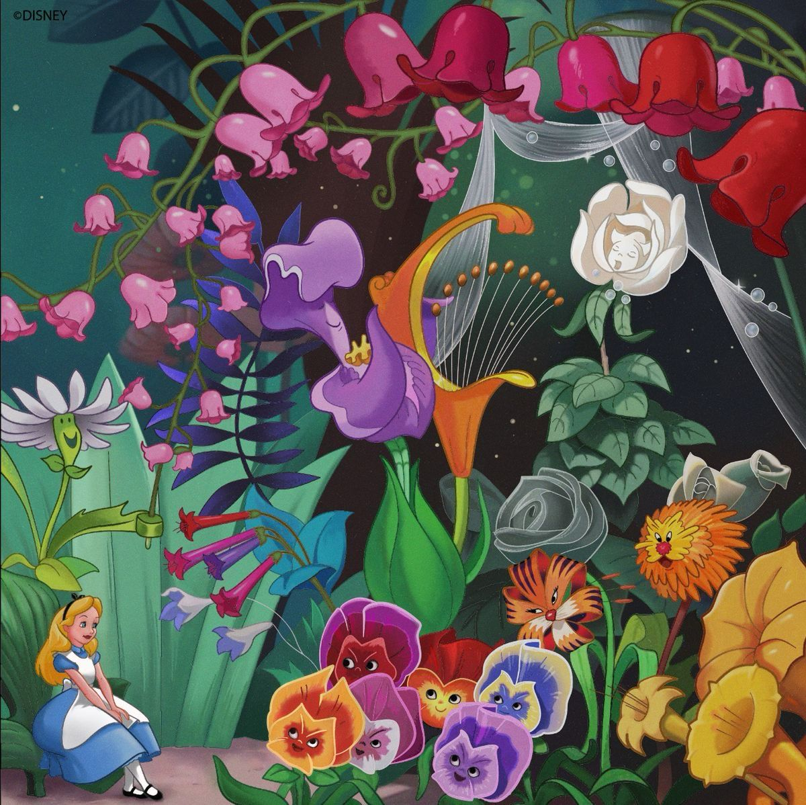
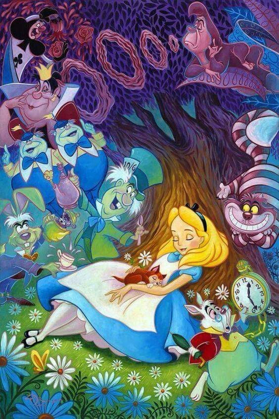

"Desde o momento em que caí na toca do coelho, disseram-me para onde devo ir e quem devo ser. Fui encolhida, esticada, arranhada e enfiada em um bule. Fui acusada de ser Alice e de não ser Alice, mas esse é o meu sonho. Vou decidir para onde vou a partir daqui."
Alice in Wonderland, conhecido também como Tim Burton's Alice in Wonderland, é um filme estadunidense de 2010, dirigido por Tim Burton e baseado no clássico Alice no País das Maravilhas, escrito por Lewis Carroll. As filmagens do filme começaram em maio de 2008 e estreou dia 5 de março de 2010 nos cinema dos Estados Unidos. No Brasil, a data de estreia foi no dia 21 de abril, mas posteriormente foi alterada para 23 do mesmo mês, com a explicação que o filme de Tim Burton terá um alcance de um público maior, chegando em mais salas de cinema.
O filme se passa 13 anos após a história original, com Alice já com 19 anos voltando à terra fantástica que visitou na infância. O filme tem no elenco Mia Wasikowska como Alice, Johnny Depp como o Chapeleiro Maluco, Helena Bonham Carter como a Rainha Vermelha e Anne Hathaway como a Rainha Branca.
Apesar de críticas divisivas, Alice se tornou o sexto filme a faturar mais de um bilhão de dólares mundialmente, e a 43ª maior bilheteria da história do cinema.

Figura 1 : Imagem do Filme Alice no País das maravilhas.
Na primeira semana de lançamento na Itália o filme Alice in Wonderland foi o mais assistido e que faturou no país. O longa arrecadou mais de US $116 milhões no final de semana de sua estreia. O filme também ganhou o título de "maior estreia em 3D",
superando a estreia do até então campeão global em bilheterias de todos os tempos, Avatar.
Enredo
Na era vitoriana Alice Kingsley tem 19 anos, acabou de perder o pai e tem sonhos recorrentes com uma terra bizarra. Em uma festa da nobreza em Londres, Alice descobre que está prestes a ser pedida em casamento. Desesperada, ela logo avista o Coelho Branco e logo começa a segui-lo. Alice cai em sua toca, chegando em uma sala com várias portas e uma mesa. Usando um líquido que diminui seu tamanho e um bolo que a aumenta, Alice passa por uma pequena porta para chegar em uma floresta cheia de animais fantásticos e flores sussurrando. Os habitantes perguntam frequentemente se ela "era a verdadeira Alice", algo que Alice só entende quando o Coelho a leva para Absolem, a Lagarta azul. Absolem mostra uma profecia que mostra que Alice, que visitou o mundo subterrâneo aos 7 anos, está destinada a matar o jaguadarte e restaurar o reinado da rainha Branca, desde então derrubada por sua maligna irmã rainha Vermelha. Porém Alice se nega a achar que isso é verdade, especialmente por não lembrar nos outros incidentes
Nesse momento o grupo é atacado pelo Valete de Copas, general da Rainha Vermelha, e sua besta, o Capturandem. Alice é ferida e foge, enquanto os outros são capturados e levados para a Rainha. Alice encontra o gato de Cheshire, que cura seus machucados e a leva para o Chapeleiro Maluco e a Lebre de Março. O chapeleiro acredita que ela é a verdadeira Alice, então a esconde e se entrega para o Valete.

Figura 2 : Imagem da Alice
Alice insiste em salvar o Chapeleiro, e vai para o castelo da Rainha Vermelha, onde por não ser reconhecida se torna convidada de honra, usando o nome "Um". Lá Alice recupera do canil do Capturandem a espada Vorpal, a única coisa que pode matar o Jaguadarte, e escapa do castelo montada no Capturandem, indo até a residência da Rainha Branca. O Gato salva o Chapeleiro de ser executado, e o Chapeleiro incita uma rebelião. A resistência foge para o castelo da Rainha Branca, e uma batalha é preparada. Antes de entrar em seu casulo, Absolem conta para Alice sua história de infância (onde ela confundiu "Mundo Subterrâneo", underland, com "País das Maravilhas", wonderland) e pede para ela lutar com o Jaguadarte.
A batalha acontece em um campo similar a um tabuleiro de xadrez. Alice combate o Jaguadarte, e o decapita em uma escada em espiral. A Rainha Branca ordena o exílio do Valete e da Rainha Vermelha, e dá a Alice o sangue do Jaguadarte, dizendo que isso a levará para casa. De volta a Londres, Alice recusa o pedido de casamento e se torna aprendiz de Lorde Ascot, pai do seu pretendente e um negociante amigo de seu pai.
Ao final da história, Alice embarca em um navio mercante, e uma borboleta azul pousa em seu ombro, que Alice reconhece como sendo Absolem.
Criação
A 4 de julho de 1862, durante um passeio de barco pelo rio Tâmisa, Charles Lutwidge Dodgson que então tinha 30 anos, na companhia do seu amigo Robinson Duckworth, conta uma história de improviso para entreter as três irmãs Liddell (Loriny Charlotte de 13 anos, Alice Pleasance de 10 anos, e Edith Mary, mais nova de 8 anos). Eram filhas de Henry George Liddell, o vice-chanceler da Universidade de Oxford e decano da Christ Church, bem como diretor da escola de Westminster. O passeio começou em Folly Bridge, perto de Oxford e terminou na aldeia de Godstow. Dando inicio ao conto de fadas das aventuras subterrâneas de Alice, em que a maior parte das aventuras foram baseadas e influenciadas em pessoas, situações e edifícios de Oxford e da Christ Church, onde por exemplo, o Buraco do Coelho (Rabbit Hole) simbolizava as escadas na parte de trás do salão principal na Christ Church. Acredita-se que uma escultura de um grifo e de um coelho presente na Catedral de Ripon, onde o pai de Carroll foi um membro, forneceu também inspiração para o conto.[1]
Essa história imprevista deu origem, a 26 de novembro de 1864, ao manuscrito de Alice Debaixo da Terra (título original Alice's Adventures Under Ground) com a finalidade de oferecer à Alice Liddell a história transcrita para o papel.
Mais tarde, influenciado tanto pelos seus amigos como pelo seu mentor George MacDonald (também escritor de literatura infantil), decidiu publicar o livro e mudou a versão original, aumentando de 18 mil palavras para 35 mil, acrescentando notavelmente as cenas do Gato de Cheshire e do Chapeleiro Louco (ou Chapeleiro Maluco).
Figura 3 : Imagem do livro de Lewis Carroll
Deste modo, a 4 de julho de 1865 (precisamente três anos após a viagem), a história de Lewis Carroll foi publicada na forma como é conhecida hoje, com ilustrações de John Tenniel. Porém, a tiragem inicial de dois mil exemplares foi removida das prateleiras devido a reclamações do ilustrador sobre a qualidade da impressão.[nota 1] A segunda tiragem, ostentando a data de 1866, ainda que tenha sido impressa em dezembro de 1865, esgotou-se nas vendas rapidamente, tornando-se um grande sucesso, tendo sido lida por Oscar Wilde e pela rainha Vitória. Na vida do autor, o livro rendeu cerca de 180 mil cópias.[nota 2] Foi traduzida para mais de 125 línguas e só na língua inglesa teve mais de 100 edições.
Em 1998, a primeira impressão do livro (que fora rejeitada) foi leiloada por 1,5 milhão de dólares americanos.
Algumas impressões desta obra contêm tanto As Aventuras de Alice no País das Maravilhas, como também a sua sequência Alice no Outro Lado do Espelho.
Personagens
Personagens e seus atores que os interpretaram
Personagens
Descrição
Atores
Filmes do mesmo diretor
Dubladores brasileiros
Caracteristicas
Seu nome no livro
Seu objetivo
Alice
Alice é uma menina muito curiosa que encontra o País das maravilhas, e sem saber tem uma missão importante.
Mia Wasikowska
Alice no país das maravilhas, Alice através do espelho.
Ana Lúcia Menezes
Curiosa, corajosa e destemida.
Alice
Salvar o mundo maravilhoso da Rainha vermelha, matando o jaguadarte com uma espada especial.
Chapeleiro maluco
Ele é completamente maluco, amigável e leal.
Johnny Depp
Alice no País das maravilhas, Alice através do espelho.
Jorge Lucas
Maluco, leal e colorido
Chapeleiro
Reconhecer a verdadeira Alice e guiar ela até a sua missão
Rainha vermelha
Ela é uma Rainha completamente sem paciência, ou melhor dizendo não tem cabeça para as coisas.
Helena Bonham Carter
Alice no país das maravilhas, Alice através do espelho.
Andrea Murucci
Cruel, impiedosa e mandona.
Rainha de copas
Governar o mundo maravilha de forma cruel e sangrenta.
Rainha branca
Ela é uma Rainha bondosa e calma, gosta de usar tudo de forma natural e sem maustratos a nenhum animal.
Anne Hathaway
Alice no país das maravilhas, Alice através do espelho.
Mabel Cezar
Bondosa, calma e piedoza
Minara de Marmoreal
Guiar a Alice a sua luta com o jaguadarte,para enfim tomar o poder.
Gato de Cheshire
Ele é um gato risonho, que guia a Alice ate o chapeleiro.
Gato de Cheshire
Todos os Filmes.
Mauro Ramos
Ele é esperto, risonho e enigmático
Gato risonho, Gato listrado ou Gato que ri.
Acompanhar a Alice até o chapeleiro Maluco.
Coelho branco
Ele é um coelho muito pontual que tem um relógio de bolso, que ele consulta de tempo em tempos.
Coelho branco
Todos os Filmes
Olney Cazarré
Ele é pontual, apressado e medroso.
Coelho branco
Faz a Alice segui-lo até a toca que leva ao país das maravilhas.
Lebre de março
Ele é um coelho muito agitado e nervoso que ajuda a Alice a não ser raptada pelos guardas da Rainha vermelha.
Lebre de Março
Todos os filmes
Alexandre Moreno
Maluco, engraçado e pontual.
Lebre de Março
Participar do chá da tarde com o chapeleiro maluco.
Valete de copas
Ele é um fiel guarda da Rainha vermelha que no fundo só quer tomar o poder dela.
Crispin Glover
Alice no País das maravilhas, Alice atráves do espelho
Alexandre Marconato
Ambiçioso, trapaceiro e traidor.
Valete de copas
Ele é quem deve achar e prender a Alice para a Rainha vermelha.